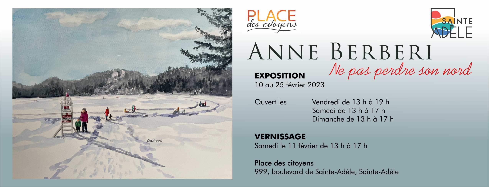
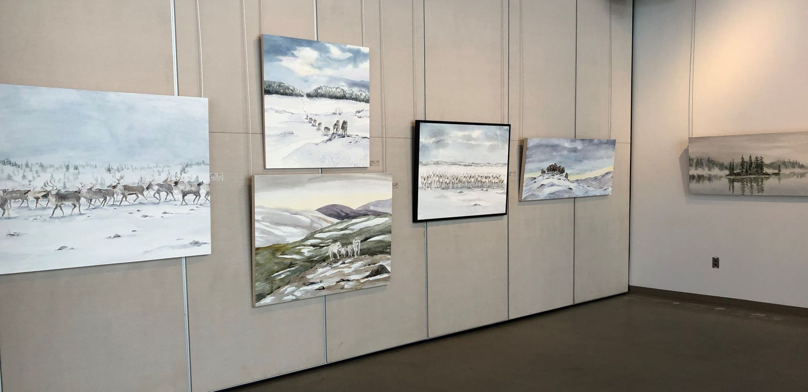
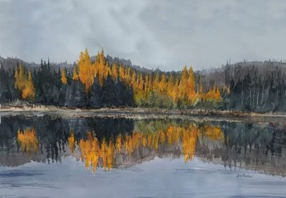
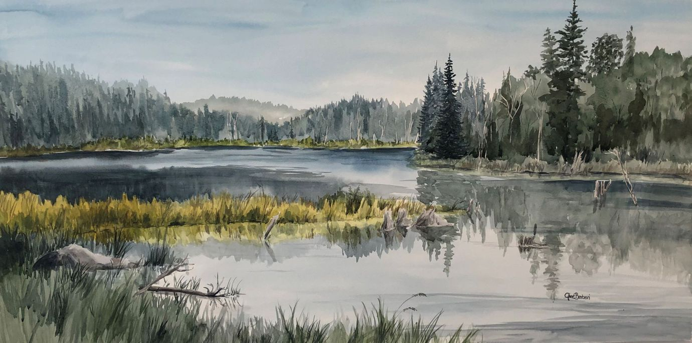

Commissaire de l'exposition Johanne Martel
ANNE BERBERI
Anne est une artiste aquarelliste principalement autodidacte.
Quand elle était plus jeune, Anne a passé une bonne partie de son temps dans les studios d’art. Sa mère était une artiste sculptrice et la trainait un peu partout avec elle; ateliers de dessin, de sculpture, media mixtes et aquarelle.
Vers 18 ans, elle a arrêté de peindre parce qu’elle commençait l’université en administration et sa vie a pris un autre tournant. Ce n’est en fait qu’une trentaine d’années plus tard qu’elle a recommencé à peindre et qu’elle est replongée dans cette passion qui ne l’avait jamais quittée.
Pour Anne, maintenant artiste à temps plein, peindre les Laurentides et en particulier Sainte-Adèle vient d’un besoin de partage, d’enracinement et de reconnaissance pour la communauté. Elle cherche à partager les émotions que m’inspirent les scènes naturelles et urbaines de notre vie nordique. La quiétude d’un marais, la joie d’un ruisseau, la pureté d’une nouvelle neige, les enfants qui patinent sur le lac; ces petits moments qui font la beauté de notre monde. Un monde à aimer et protéger.

Indifférente aux attentes et au perfectionnisme, l’artiste peint par intuition, permettant ainsi à chacun de voir un reflet de sa propre liberté dans ses toiles :

La transparence de l’aquarelle lui permet de jouer avec la luminosité et d’explorer les subtilités des couleurs pour capter l’ambiance des lieux. Elle apprécie ce medium pour sa spontanéité, les réactions entre le papier, l’eau et les couleurs qui poussent à accepter les imprévus et les intégrer dans mes créations.


Membre de la Maison des Arts de Saint-Faustin
-
Exposition en mini solo à la Maison des Arts de Saint-Fautin à l’été 2022.
-
Récipiendaire du Certificat d’excellence de l’Émergence Magazine Québec
-
Article sur son parcours artistique dans le Journal Acces
-
https://www.journalacces.ca/culture/anne-berberi-le-reveil-dune-passion/
Ses œuvres acquises par des particuliers se retrouvent à travers le Canada et l’Europe.
Conception Johanne Martel www.magadam.com .
LiliFlore et Johanne Martel, commissaire de l'exposition